首页 > 编程笔记
Word插入脚注和尾注（非常详细）
Word 脚注位于页面的底部，用于对当前页面中的特定内容进行补充说明。Word 尾注位于文档的结尾，用于列出正文中标记的引文出处等内容。
在复杂文档的创作和编辑过程中，经常会涉及脚注和尾注的操作，使用 Word 提供的相关功能可以使脚注和尾注的添加和维护工作变得更容易。
可以在一个页面中添加多个脚注，Word 会根据添加的顺序依次为这些脚注编号，调整脚注的位置时，为了保持脚注编号的正确顺序，Word 会自动更正脚注中的编号。
脚注由脚注引用标记、脚注分隔线、脚注引用编号和脚注内容4个部分组成，如图1所示。
在文档中插入脚注之前，需要先选择要插入脚注的内容，或者将插入点定位到该内容的右侧，然后在功能区的【引用】选项卡中单击【插入脚注】按钮，插入点将自动跳转到当前页面的底部，然后输入脚注的内容即可。
除了脚注内容之外，脚注的其他3个部分都由 Word 自动创建。将鼠标指针指向脚注引用标记时，Word会自动显示脚注内容，如图2所示。
尾注位于文档的结尾，即文档最后一个段落的下方，而不是文档最后一页的底部。如果需要插入尾注，则可以在功能区的【引用】选项卡中单击【插入尾注】按钮，然后输入尾注的内容。
如果需要设置脚注和尾注的格式，则可以修改“脚注引用”“脚注文本”“尾注引用”“尾注文本”4个样式。
为了快速找到文档中插入的脚注，可以在功能区的【引用】选项卡中单击【下一条脚注】按钮，Word 会自动定位到下一条脚注。
实现步骤：
① 按 Ctrl+End 组合键，将鼠标指针移动到文档结尾，然后按 Ctrl+Enter 组合键，插入一个分页符。
② 在新的空白页的顶部输入“参考文献”，将其居中对齐，并为其设置合适的字体格式。
③ 将鼠标指针定位到要插入参考文献标记的位置，然后单击功能区中的【引用】-->【脚注】组中的对话框启动器，打开【脚注和尾注】对话框，进行以下几项设置，如图4所示。
对示意图的说明：
⑤ 如需添加更多参考文献，只需重复执行步骤③和④的操作。
⑥ 切换到草稿视图，在功能区的【引用】选项卡中单击【显示备注】按钮，如图 5 所示。
⑦ 在 Word 窗口下方打开【尾注】下拉列表，从中选择【尾注分隔符】选项，如图 6 所示。
⑧ 选中尾注分隔符，如图 7 所示，然后按 Delete 键，即可删除位于文档结尾的参考文献上方的横线。
对示意图的说明：
在【编号格式】下拉列表中选择预置的一种编号，然后在【起始编号】文本框中为脚注和尾注设置起始编号值。如果预置的编号格式无法满足应用需求，则可以自定义引用标记，或者单击【符号】按钮后选择更多的符号。
默认情况下，文档中的所有脚注都是依次编号的，如果需要以“页”为单位对脚注进行编号，则可以在【脚注和尾注】对话框的【编号】下拉列表中选择【每页重新编号】选项，如图10所示。
如果在文档中设置了分节，则可以在【编号】下拉列表中选择【每节重新编号】选项，从而以“节”为单位对脚注进行编号。对尾注的设置与此类似。
单击功能区中的【引用】-->【脚注】组中的对话框启动器，打开【脚注和尾注】对话框，然后单击【转换】按钮，在打开的对话框中选择所需的转换方式，最后单击【确定】按钮，如图 11 所示。
在复杂文档的创作和编辑过程中，经常会涉及脚注和尾注的操作，使用 Word 提供的相关功能可以使脚注和尾注的添加和维护工作变得更容易。
1. Word 插入脚注和尾注
脚注是在一个页面底部添加的对本页某处内容的说明性文字。可以在一个页面中添加多个脚注，Word 会根据添加的顺序依次为这些脚注编号，调整脚注的位置时，为了保持脚注编号的正确顺序，Word 会自动更正脚注中的编号。
脚注由脚注引用标记、脚注分隔线、脚注引用编号和脚注内容4个部分组成，如图1所示。
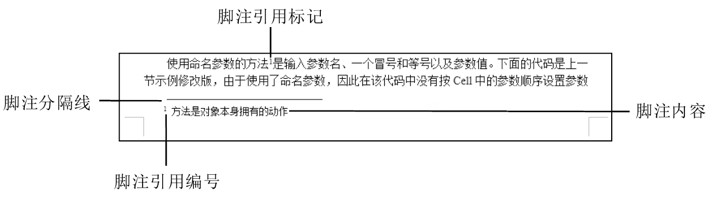
图1：Word 脚注的组成部分
图1：Word 脚注的组成部分
在文档中插入脚注之前，需要先选择要插入脚注的内容，或者将插入点定位到该内容的右侧，然后在功能区的【引用】选项卡中单击【插入脚注】按钮，插入点将自动跳转到当前页面的底部，然后输入脚注的内容即可。
除了脚注内容之外，脚注的其他3个部分都由 Word 自动创建。将鼠标指针指向脚注引用标记时，Word会自动显示脚注内容，如图2所示。
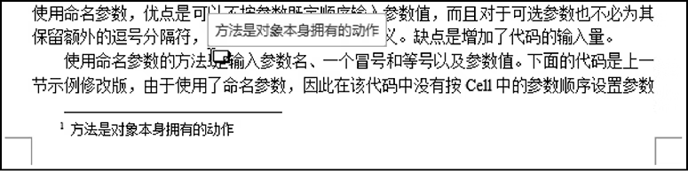
图2：鼠标指针指向脚注引用标记时自动显示脚注内容
图2：鼠标指针指向脚注引用标记时自动显示脚注内容
尾注位于文档的结尾，即文档最后一个段落的下方，而不是文档最后一页的底部。如果需要插入尾注，则可以在功能区的【引用】选项卡中单击【插入尾注】按钮，然后输入尾注的内容。
如果需要设置脚注和尾注的格式，则可以修改“脚注引用”“脚注文本”“尾注引用”“尾注文本”4个样式。
为了快速找到文档中插入的脚注，可以在功能区的【引用】选项卡中单击【下一条脚注】按钮，Word 会自动定位到下一条脚注。
示例
为论文添加可自动编号的参考文献，效果如图 3 所示。
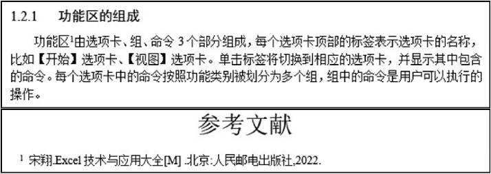
图3：为论文添加可自动编号的参考文献
图3：为论文添加可自动编号的参考文献
实现步骤：
① 按 Ctrl+End 组合键，将鼠标指针移动到文档结尾，然后按 Ctrl+Enter 组合键，插入一个分页符。
② 在新的空白页的顶部输入“参考文献”，将其居中对齐，并为其设置合适的字体格式。
③ 将鼠标指针定位到要插入参考文献标记的位置，然后单击功能区中的【引用】-->【脚注】组中的对话框启动器，打开【脚注和尾注】对话框，进行以下几项设置，如图4所示。
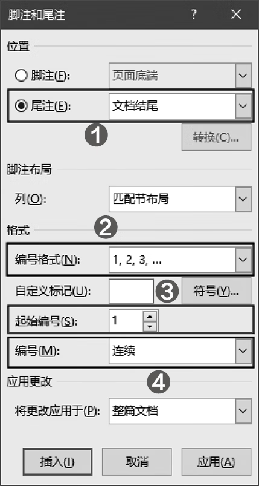
图4：Word 设置尾注格式
图4：Word 设置尾注格式
对示意图的说明：
- 选中【尾注】单选按钮，然后在右侧的下拉列表中选择【文档结尾】；
- 将【编号格式】设置为【1,2,3,...】；
- 将【起始编号】设置为【1】；
- 将【编号】设置为【连续】。
温馨提示：参考文献标记是指在正文中每个引用参考文献的位置上的编号，在正文的结尾会列出与编号相对应的所有参考文献。
④ 单击【插入】按钮，系统自动关闭【脚注和尾注】对话框，插入点自动定位到“参考文献”几个字的下方，输入所需的参考文献。⑤ 如需添加更多参考文献，只需重复执行步骤③和④的操作。
⑥ 切换到草稿视图，在功能区的【引用】选项卡中单击【显示备注】按钮，如图 5 所示。
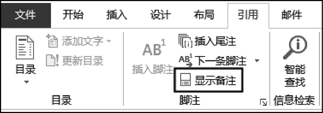
图5：单击【显示备注】按钮
图5：单击【显示备注】按钮
⑦ 在 Word 窗口下方打开【尾注】下拉列表，从中选择【尾注分隔符】选项，如图 6 所示。
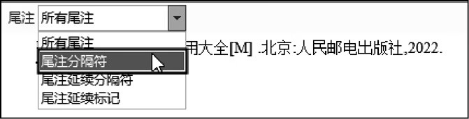
图6：选择【尾注分隔符】选项
图6：选择【尾注分隔符】选项
⑧ 选中尾注分隔符，如图 7 所示，然后按 Delete 键，即可删除位于文档结尾的参考文献上方的横线。
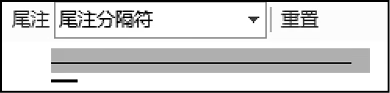
图7：选中尾注分隔符
图7：选中尾注分隔符
2. 调整脚注和尾注的位置
默认情况下，脚注位于页面底部，尾注位于文档结尾。用户可以随时改变脚注和尾注的位置。单击功能区中的【引用】-->【脚注】组中的对话框启动器，打开【脚注和尾注】对话框，然后进行以下设置，如图 8 所示。
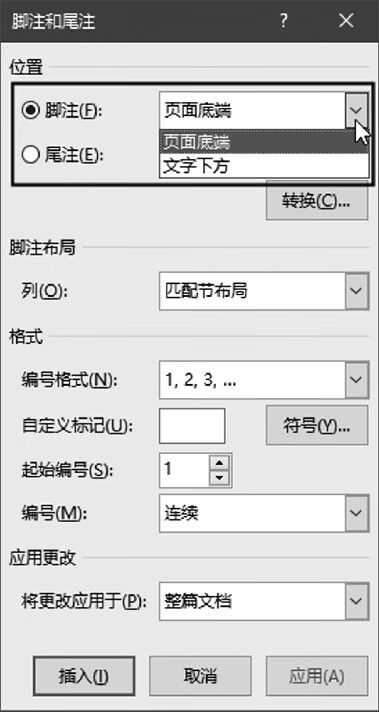
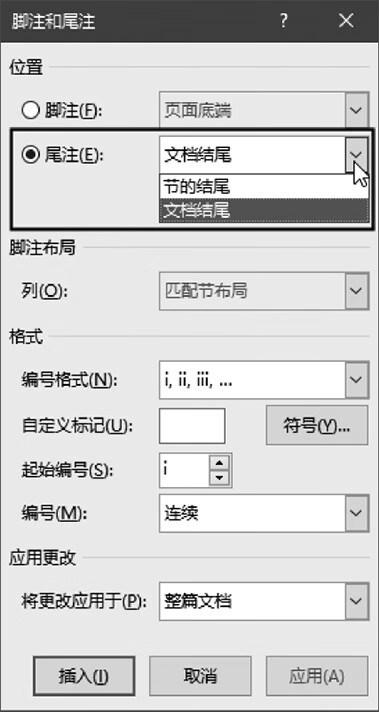
图8：调整脚注和尾注的位置
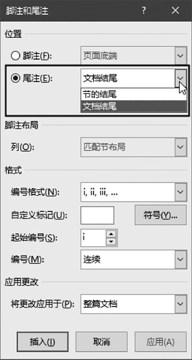
图8：调整脚注和尾注的位置
对示意图的说明：
- 如需调整脚注的位置，可以选中【脚注】单选按钮，然后在右侧的下拉列表中选择脚注的位置。
- 如需调整尾注的位置，可以选中【尾注】单选按钮，然后在右侧的下拉列表中选择尾注的位置。
温馨提示：如果已经在文档中插入了脚注，则可以直接使用鼠标拖动脚注引用标记来改变脚注的位置，或者通过剪切和粘贴操作移动脚注。
3. 设置脚注和尾注的编号方式
可以在【脚注和尾注】对话框的【格式】组中为脚注和尾注的引用标记设置编号格式，如图 9 所示。在【编号格式】下拉列表中选择预置的一种编号，然后在【起始编号】文本框中为脚注和尾注设置起始编号值。如果预置的编号格式无法满足应用需求，则可以自定义引用标记，或者单击【符号】按钮后选择更多的符号。
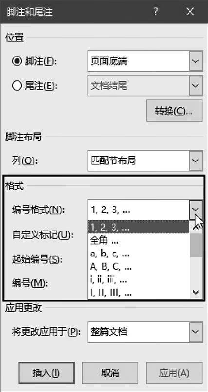
图9：设置脚注或尾注的编号格式
图9：设置脚注或尾注的编号格式
默认情况下，文档中的所有脚注都是依次编号的，如果需要以“页”为单位对脚注进行编号，则可以在【脚注和尾注】对话框的【编号】下拉列表中选择【每页重新编号】选项，如图10所示。
如果在文档中设置了分节，则可以在【编号】下拉列表中选择【每节重新编号】选项，从而以“节”为单位对脚注进行编号。对尾注的设置与此类似。
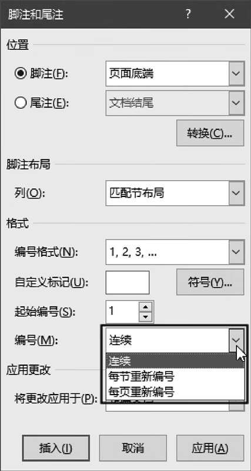
图10：设置脚注或尾注的编号方式
图10：设置脚注或尾注的编号方式
4. 在脚注和尾注之间转换
用户可以随时在脚注和尾注之间转换，即将脚注改为尾注或将尾注改为脚注。单击功能区中的【引用】-->【脚注】组中的对话框启动器，打开【脚注和尾注】对话框，然后单击【转换】按钮，在打开的对话框中选择所需的转换方式，最后单击【确定】按钮，如图 11 所示。
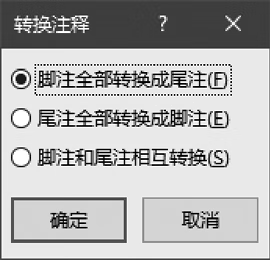
图11：在脚注和尾注之间转换
图11：在脚注和尾注之间转换
注意事项
【转换注释】对话框中的可选项根据文档中存在的脚注和尾注而变。例如，如果文档中只包含脚注，那么在打开的【转换注释】对话框中只有【脚注全部转换成尾注】单选按钮可用。5. Word 删除脚注和尾注
如果需要删除 Word 文档中的脚注和尾注，将脚注和尾注的引用标记删除即可。删除引用标记的方法与删除普通文本的方法相同，选中引用标记后按 Delete 键即可。关注公众号「站长严长生」，在手机上阅读所有教程，随时随地都能学习。内含一款搜索神器，免费下载全网书籍和视频。

微信扫码关注公众号